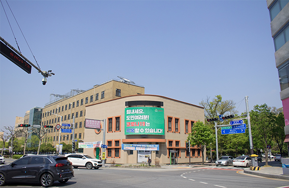
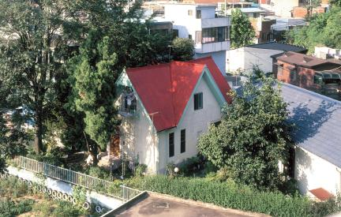

충청북도청사는 1937년 현재의 위치에 있던 큰 연못을 메워 신축한 유서 깊은 건물입니다. 초기에는 충주에 있던 관찰부가 청주로 이전하며 옛 병영 건물을 활용하다가, 1937년 6월 지금의 모습인 2층 벽돌 건물로 새롭게 태어났습니다.
이후 1959년에 3층으로 증축되었고, 여러 차례의 보수 공사를 거치면서도 건립 당시의 원형을 훌륭하게 유지하고 있습니다. 외벽은 붉은 벽돌 위에 타일로 마감되어 세련된 근대 건축의 미학을 보여줍니다.
건물의 전체적인 구조는 중앙 현관을 중심으로 좌우가 대칭을 이루는 장방형 형태입니다. 이는 당시 관청 건물의 전형적인 스타일로, 증축 과정에서도 기존의 이미지를 잘 계승하여 근대와 현대가 공존하는 독특한 분위기를 자아냅니다.
역사적인 건립 과정과 현대적인 건축미를 동시에 지닌 이곳은 청주의 근현대사를 상징하는 소중한 문화유산으로 평가받고 있습니다.

구 충북산업장려관
주소
충청북도 청주시 상당구 상당로 82 (문화동)
건립시기
1936년 (일제강점기)
지정정보
국가등록문화유산 제352호 (2007년 지정)
충청북도청 정문 옆에 위치한 이 건물은 1936년 지역 산업을 장려하고 생산품을 전시하기 위해 세워졌습니다. 직선과 곡선이 조화를 이루는 외관은 당시 유행하던 근대 건축의 특징인 '모더니즘' 스타일을 잘 보여줍니다. 특히 건물의 모서리 부분을 부드러운 곡선으로 처리한 디자인이 돋보입니다. 해방 이후에는 다양한 행정 용도로 사용되다가, 현재는 카페와 전시 공간으로 리모델링되어 시민들에게 개방되었습니다. 도청 본관과 나란히 서서 청주의 근대 거리를 지키고 있는 상징적인 건축물입니다.
충북도청 정문 바로 옆에 위치하고 있어 도청행 버스를 이용하면 편리합니다.
건물 내 카페에서 휴식을 취한 후, 뒤편 대성로 벽화마을 산책을 추천합니다.
건물 내부 카페에서 로컬 디저트를 즐기거나, 도청 인근 백반 골목을 추천합니다.
도청 인근 상권 내 숙박시설이나 터미널 부근 호텔 이용이 용이합니다.

문화동 일·양 절충식 가옥
주소
충청북도 청주시 상당구 대성로 122번길 (문화동)
건립시기
1924년 (일제강점기)
지정정보
국가등록문화유산 제9호 (2002년 지정)
1924년에 건립된 이 가옥은 일본식 주택 양식에 서양식 건축 기법이 더해진 독특한 '절충식' 구조를 가지고 있습니다. 당시 상류층 주거 문화를 엿볼 수 있는 귀중한 자료입니다. 전체적으로는 일본식 평면을 유지하면서도 외부 현관이나 거실 등 사용자의 편의를 위한 서양식 공간 구성이 특징입니다. 청주 향교와 인접한 '대성로' 거리의 고즈넉한 분위기와 잘 어우러지며, 세월의 흐름에도 보존 상태가 매우 양호하여 근대 주택 건축의 변화 과정을 직접 확인할 수 있는 곳입니다.